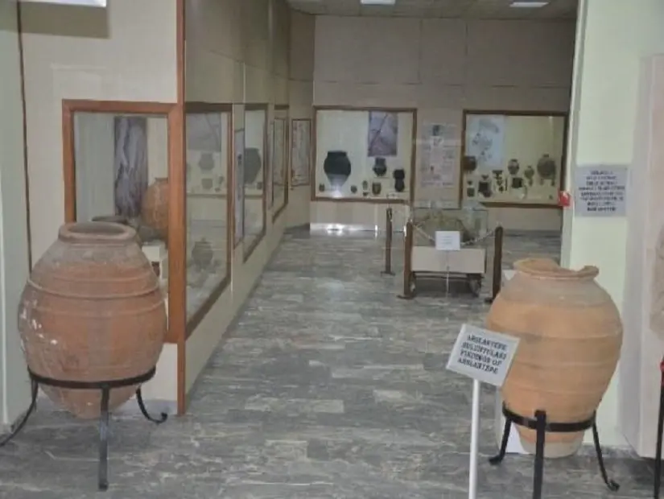

UNESCO Dünya Mirası Listesi’nde yer alan Arslantepe Höyüğü ve dar sokaklarda sıralanan tarihi konaklardan devasa kanyonlara ve tabiat harikası şelalelere kadar pek çok güzelliğe sahip olan Malatya’nın en güzel yerlerini sizler için sıraladık.
Arslantepe Höyüğü
2021 yılında UNESCO Dünya Mirası Listesi’ne dahil edilen ve Türkiye'nin en büyük höyüklerinden biri olan Arslantepe Höyüğü, hem tarih hem de arkeoloji meraklılarının mutlaka görmesi gereken bir tarihi hazine. Melid olarak da bilinen ve Malatya'ya yaklaşık 7 kilometre uzaklıkta bulunan höyük, Malatya Ovası’na hakim 30 metre yükseklikteki bir tepe üzerinde 4 hektarlık bir alanı kapsıyor. Açık hava müzesi olarak her yıl binlerce kişi tarafından ziyaret edilen Arslantepe Höyüğü’nde Geç Kalkolitik ve Demir Çağı’ndan Hitit, Roma ve Bizans dönemine kadar uzanan pek çok etkileyici yapı bulunuyor. Çarpıcı kaya mezar alanları ve yerleşim yerleri arasında unutulmaz bir tarih gezisi yapabileceğiniz Arslantepe Höyüğü hakkında rehberlerden de ilginç bilgiler alabilirsiniz. Bölgede yapılan kazılarda elde edilen paha biçilmez eserleri ise Malatya Müzesi’nde yakından görebilirsiniz.
Konum İçin Tıklayınız !
Etnografya Müzesi
Malatya'nın klasik mimari özelliklerini görebileceğiniz, 1900'lü yılların başında yan yana inşa edilen 5 tane etkileyici konak, Saray Mahallesinde Beşkonaklar Caddesi üzerinde her köşede çarpıcı manzaralar sunuyor. Açık hava müzesine andıran otantik sokakta taş, ahşap ve kerpiç malzemelerle inşa edilen konaklar, el yapımı taş oymalarıyla da ziyaretçilerini büyülüyor. Günümüzde bazıları restore edilerek müze haline getirilen konakların odalarında antikalar ve dönem mobilyaları arasında tarihte keyifli bir yolculuğa çıkabilirsiniz. Malatya’nın simgelerinden biri haline gelen Beşkonaklar, hem mimari hem de fotoğrafçılık meraklılarının ilk uğraması gereken yerler arasında.
Konum İçin Tıklayınız !
Orduzu
Malatya'nın merkezi Battalgazi ilçesine bağlı küçük bir belde olan Orduzu, hem Arslantepe Höyüğü gibi
tarihi hazineler hem de Turgut Özal Tabiat Parkı gibi doğal güzelliklere ev sahipliği yaptığı için sıkça
ziyaret ediliyor. Malatya'nın ünlü kayısı festivallerinin de düzenlendiği belde, yemyeşil doğal
güzellikleri ile yaz aylarının da sevilen kaçış noktalarından biri. Arslantepe Höyüğü’nde binlerce
yıllık yapıları yakından görebileceğiniz gezinizde Turgut Özal Tabiat Parkı’nın yürüyüş parkurları,
göletler ve piknik alanlarında da güzel zaman geçirebilirsiniz. El yapımı yöresel ürünler alabileceğiniz
Orduzu çarşılarına mutlaka uğramanızı önerdiğimiz beldede Malatya’ya özgü yerel lezzetleri tatmayı da
unutmayın.
Konum
İçin Tıklayınız
Malatya Şİre Pazarı
Türkiye'nin en önemli kayısı üreticisi olan Malatya, aynı zamanda ülkenin en büyük kuru kayısı üreticisi
konumunda. Dünyanın en büyük kuru kayısı pazarlarından biri olan ve 19. yüzyıldan beri kurulan Şire
Pazarı ise şehri gezen yerli ve yabancı turistlerin en çok ziyaret edilen yerler arasında. Şehir
merkezinde güzel bir konumda yer alan ve kuru kayısı, incir, üzüm, badem, ceviz, fıstık gibi kuru meyve
ve kuruyemişlerin satıldığı 2000’e yakın tezgahın bulunduğu Şire Pazarı, Malatya’yı gezerken tatil
alışveriş yapmak için ilk uğramanız yerler arasında.
Konum
İçin Tıklayınız !
Malatya Hürriyet Parkı

Malatya'nın en büyük parklarından biri de Yunus Emre Caddesi üzerinde güzel bir konumda yer alan
Hürriyet Parkı. 20 dönümlük geniş bir yeşil alana sahip olan park; ağaçlarla çevrili yürüyüş yolları,
geceleri ışıklandırılan fıskiyelerin bulunduğu göleti ve çocuk oyun parklarıyla hem yerli halk hem de
turistler tarafından çok ilgi görüyor. Şehrin kalabalığından bir süre uzaklaşabileceğiniz ve spor
yapabileceğiniz Hürriyet Parkı’nda huzurlu atmosferde çayınızı yudumlayarak gezinizin yorgunluğunu da
atabilirsiniz. Malatya Hürriyet Parkı, açıldığı 1930’lu yıllardan beri şehrin en sevilen rekreasyon
alanı olarak hizmet vermeye devam ediyor.
Konum İçin Tıklayınız !
Malatya Kültür Evi
 19. yüzyılda inşa edilen tarihi bir konağın restore edilmesiyle hizmete başlayan Malatya Kültür Evi,
şehrin etkileyici kültürel geçmişini anlamak isteyenlerin ilk uğraması gereken yerlerden biri. 1980
yılında Malatya Belediyesi tarafından alınarak 2010 ile 2015 yılları arasında restore edilen Malatya
Kültür Evi, İnönü Mahallesi’nde yürüyerek ulaşılabilen güzel bir konumda yer alıyor. Malatya'nın
kültürel ve tarihi mirasını yansıtan yüzlerce çapıcı esere ev sahipliği yapan müzede geleneksel el
sanatları, yöresel kıyafetler, tarihi eserler ve fotoğraflar arasında Malatya tarihinde unutulmaz bir
yolculuk yapabilirsiniz. Hem kültür hem sanat tutkunlarının keyifle gezebileceği Malatya Kültür Evi’nin
etkileyici mimarisini de incelemeyi unutmayın.
19. yüzyılda inşa edilen tarihi bir konağın restore edilmesiyle hizmete başlayan Malatya Kültür Evi,
şehrin etkileyici kültürel geçmişini anlamak isteyenlerin ilk uğraması gereken yerlerden biri. 1980
yılında Malatya Belediyesi tarafından alınarak 2010 ile 2015 yılları arasında restore edilen Malatya
Kültür Evi, İnönü Mahallesi’nde yürüyerek ulaşılabilen güzel bir konumda yer alıyor. Malatya'nın
kültürel ve tarihi mirasını yansıtan yüzlerce çapıcı esere ev sahipliği yapan müzede geleneksel el
sanatları, yöresel kıyafetler, tarihi eserler ve fotoğraflar arasında Malatya tarihinde unutulmaz bir
yolculuk yapabilirsiniz. Hem kültür hem sanat tutkunlarının keyifle gezebileceği Malatya Kültür Evi’nin
etkileyici mimarisini de incelemeyi unutmayın.
Konum
İçin Tıklayınız !
Malatya Tohma Kanyonu
Tohma Çayı'nın oluşturduğu 2 kilometre uzunluğunda ve 100 metre genişliğinde bir vadide uzanan Tohma
Kanyonu, Malatya'nın Darende ilçesinde yer alıyor. Önemli bir doğa sporları merkezi haline gelen
görkemli kanyon; sarp kayalıklar arasındaki birçok küçük şelale, gölet ve mağaraya ev sahipliği yapıyor.
İyi düzenlenmiş yürüyüş parkurları, sessiz piknik alanları ve organik ürünlerle kahvaltılar
yapabileceğiniz kır bahçeleri gibi olanaklar bulabileceğiniz Tohma Kanyonu’nun hırçın derelerinde
rafting yaparak da unutulmaz anlar yaşayabilirsiniz. Yüzlerce metrelik seyir alanlarından muhteşem
tabiat fotoğrafları çekebileceğiniz Tohma Kanyonu, kamp yapmak için de Malatya’da gidebileceğiniz en
özel noktalar arasında.
Konum
İçin Tıklayınız !
Malatya Kudret Havuzu
Tohma Kanyonu içerisinde yer alan benzersiz bir yüzme havuzu olan Kudret Havuzu, hem doğa tutkunları hem
de şifa arayanların Malatya’da ilk uğradığı yerler arasında. Tohma Çayı'ndan ayrılarak kayalıklardan
çıkan termal sular ile beslenen Kudret Havuzu; 0,5 metre, 1 metre ve 1,5 metre olarak iç farklı
derinlikte inşa edilmiştir. Yılın her mevsimi 22 derece sıcaklıktaki şifalı sularıyla ünlü olan havuzun
sularının başta cilt hastalıkları olmak üzere romatizma ve kas ağrıları gibi birçok rahatsızlığa iyi
geldiği biliniyor. Sarp kanyon duvarları arasında unutulmaz bir yüzme deneyimi yaşayabileceğiniz ve
şifalı sularda dinlenebileceğiniz Kudret Havuzu’na Malatya gezinizde mutlaka uğramanızı öneririz.
Konum
İçin Tıklayınız!
Malatya Levent Vadisi
 Malatya'nın Akçadağ ilçesinde bulunan ve 28 kilometre uzunluk ile 200 metre derinliğinde bir doğa
harikası olan Levent Vadisi, yaklaşık 65 milyon yıl önce jeolojik deformasyonlar sonucu oluşmuş
keşfedilmeye değer bir yer. Vadi her köşesinde karşınıza çıkacak etkileyici jeolojik oluşumlar, tarihi
ve kültürel zenginlikleri ile sadece Malatya’nın değil, Türkiye'nin de önemli doğa miraslarından biri
olarak kabul ediliyor. Doğa yürüyüşleri, kamp, bisiklet, kaya tırmanışı gibi doğa sporları için ideal
bir yer olan Levent Vadisi; kaya oluşumları, mağaralar, şelaleler, dereler ve ormanlar arasında
unutulmaz zamanlar geçirme fırsatı sunuyor.
Malatya'nın Akçadağ ilçesinde bulunan ve 28 kilometre uzunluk ile 200 metre derinliğinde bir doğa
harikası olan Levent Vadisi, yaklaşık 65 milyon yıl önce jeolojik deformasyonlar sonucu oluşmuş
keşfedilmeye değer bir yer. Vadi her köşesinde karşınıza çıkacak etkileyici jeolojik oluşumlar, tarihi
ve kültürel zenginlikleri ile sadece Malatya’nın değil, Türkiye'nin de önemli doğa miraslarından biri
olarak kabul ediliyor. Doğa yürüyüşleri, kamp, bisiklet, kaya tırmanışı gibi doğa sporları için ideal
bir yer olan Levent Vadisi; kaya oluşumları, mağaralar, şelaleler, dereler ve ormanlar arasında
unutulmaz zamanlar geçirme fırsatı sunuyor.
Levent Vadisi'nin en önemli turistik merkezlerinden biri ise 104 metre yükseklikte ve zemininin bir
bölümü cam olan seyir terası. Her yıl binlerce kişinin ziyaret ettiği seyir terasından, vadinin muhteşem
panoramik manzarasını seyrederek harika fotoğraflar çekebilirsiniz. Neolitik Çağ'da Selçuklu ve Osmanlı
dönemlerine kadar uzanan yapıları inceleme şansı bulabileceğiniz Levent Vadisi, zengin endemik bitki ve
vahşi hayvan çeşitliliğiyle de görülmeye değer yerler arasında.
Konum
İçin Tıklayınız!
Karakaya Barajı Gölü
Türkiye'nin en büyük ikinci baraj gölü olan ve Malatya merkezine yaklaşık 2 saat uzaklıktaki
Diyarbakır’ın Çüngüş ilçesi sınırlarında yer alan Karakaya Barajı Gölü, günübirlik gezilerin sevilen
adreslerinden biri. Fırat Nehri üzerinde Güneydoğu Anadolu Projesi (GAP) kapsamında 1976-1987 yılları
arasında inşa edilen baraj gölü, çevresindeki doğal güzellikleriyle çok sevilen bir rekreasyon alanı
haline gelmiş durumda. Göl çevresinde irili ufaklı birçok ada bulunuyor ve gölde yaz aylarında
balıkçılık ve su sporları gibi aktiviteler düzenleniyor. Hem huzurlu ortamda piknik yapmak hem de temiz
havada yürüyüşler yapmak için Malatya gezinizde Karakaya Barajı Gölü’ne de uğrayabilirsiniz.
Konum
İçin Tıklayınız!
Silahtar Mustafa Paşa Kervansarayı
4. Murat'ın silahtarı Bosnalı Mustafa Kemal Paşa tarafından yaptırılan etkileyici Silahtar Mustafa Paşa
Kervansarayı, Malatya'da görebileceğiniz başka bir önemli tarihi yapı. 1637 yılında merkezi Battalgazi
ilçesinde Alacakapı Mahallesi’nde inşa edilen tarihi yapı, klasik Osmanlı kervansarayı tarzında
dikdörtgen planlı ve açık havlulu olarak tasarlanmış. Geniş çiçekli bahçeler arasında görülmeye değer
bir manzara sunan ve 2010 yılında aslında uygun olarak 3 yılda restore edilen Silahtar Mustafa Paşa
Kervansarayı’nda dükkanlar, mescit, havuz ve avlu gibi bölümleri gezerek tarihi atmosferin tadını
çıkarabilirsiniz.
Konum
İçin Tıklayınız!
Malatya Ulu Camii
4. Murat'ın silahtarı Bosnalı Mustafa Kemal Paşa tarafından yaptırılan etkileyici Silahtar Mustafa Paşa
Kervansarayı, Malatya'da görebileceğiniz başka bir önemli tarihi yapı. 1637 yılında merkezi Battalgazi
ilçesinde Alacakapı Mahallesi’nde inşa edilen tarihi yapı, klasik Osmanlı kervansarayı tarzında
dikdörtgen planlı ve açık havlulu olarak tasarlanmış. Geniş çiçekli bahçeler arasında görülmeye değer
bir manzara sunan ve 2010 yılında aslında uygun olarak 3 yılda restore edilen Silahtar Mustafa Paşa
Kervansarayı’nda dükkanlar, mescit, havuz ve avlu gibi bölümleri gezerek tarihi atmosferin tadını
çıkarabilirsiniz.
Konum
İçin Tıklayınız!
Malatya Arkeoloji Müzesi

Binlerce yıllık uzun bir tarihe sahip olan ve pek çok önemli medeniyete ev sahipliği yapan Malatya’nın
çevresinde yapılan arkeolojik kazılarda elde edilen binlerce eserleri, Malatya Arkeoloji Müzesi'nde
yakından görebiliyorsunuz. Neolitik, Kalkolitik, Tunç Çağı, Hitit, Asur, Urartu, Roma, Bizans, Selçuklu
ve Osmanlı dönemlerine ait paha biçilmez eserlerle dolu olan müzenin kronolojik olarak sıralanmış
sergilerini gezerken şehrin tarihi hakkında ilginç bilgiler alabilirsiniz.
Antik kılıçlardan el yapımı çömleklere, taş kabartmalardan sikkeler ve heykellere kadar pek çok eseri
yakından görebileceğiniz Malatya Arkeoloji Müzesi'nin bahçesinde ise etkileyici lahit, heykel ve taş
eserleri inceleme şansı bulabilirsiniz. Osmanlı dönemine kadar uzanan sikke koleksiyonunun da özellikle
çok ilgi gördüğü müze, Malatya merkezinde Kernek Meydanı'na kısa bir yürüyüş mesafesinde yer alıyor.
Malatya Arkeoloji Müzesi’ni ziyaret ederek hem Malatya'nın kültürü hem de bölgenin uzun tarihi hakkında
etkileyici bilgilere ulaşabilirsiniz.
Konum
İçin Tıklayınız!
Beşkonaklar Etnografya Müzesi
 Malatya'nın zengin kültürel yapısını anlamak için Saray Mahallesi’nde Beşkonaklar Caddesi üzerinde
sıralanan büyüleyici tarihi konakların restore edilmesi ile hizmete başlamış olan Beşkonakları
Etnografya Müzesi’ne de uğramalısınız. Yan yana beş tane konaktan ismini alan ve Malatya’nın en çok
ziyaret edilen yerlerinden biri olan etnografya müzesinde dönem mobilyalarıyla dekore edilmiş konak
odalarında binlerce yıllık Malatya kültürünü yansıtan el yapımı ürünlerden antikalara kadar yüzlerce
objeyi yakından inceleyebilirsiniz. Hem tarih ve kültür hem de sanat tutkunlarının keyifle gezebileceği
Beşkonakları Etnografya Müzesi’ni uğrayarak tarihte keyifli bir yolculuğa çıkabilirsiniz.
Malatya'nın zengin kültürel yapısını anlamak için Saray Mahallesi’nde Beşkonaklar Caddesi üzerinde
sıralanan büyüleyici tarihi konakların restore edilmesi ile hizmete başlamış olan Beşkonakları
Etnografya Müzesi’ne de uğramalısınız. Yan yana beş tane konaktan ismini alan ve Malatya’nın en çok
ziyaret edilen yerlerinden biri olan etnografya müzesinde dönem mobilyalarıyla dekore edilmiş konak
odalarında binlerce yıllık Malatya kültürünü yansıtan el yapımı ürünlerden antikalara kadar yüzlerce
objeyi yakından inceleyebilirsiniz. Hem tarih ve kültür hem de sanat tutkunlarının keyifle gezebileceği
Beşkonakları Etnografya Müzesi’ni uğrayarak tarihte keyifli bir yolculuğa çıkabilirsiniz.
Konum
İçin Tıklayınız!
Malatya Atatürk Evi
Malatya'yı gezenlerin ilk uğradığı yerlerden biri de Mustafa Kemal Atatürk'ün Malatya'ya ilk ziyaretinde
bir gece konakladığı klasik mimarili taş konağın restore edilerek 1981 yılında açılması ile hizmete
başlayan Malatya Atatürk Evi. Atatürk’ün kişisel eşyalarının yanı sıra antikalar, resimler ve tarihi
belgelerle zengin bir koleksiyona sahip olan müze, 19. yüzyıl klasik kesme taş mimarisiyle de çok ilgi
görüyor. Atatürk kitaplığı ve cumhuriyet dönemi fotoğraflarını da inceleme şansı bulabileceğiniz Malatya
Atatürk Evi, Yunus Emre Caddesi’nde Hürriyet Parkı’nın hemen karşısında güzel bir konumda yer alıyor.
Konum
İçin Tıklayınız!
Turgut Özal Tabiat Parkı
Malatya'nın merkezindeki Battalgazi ilçesi sınırları içinde yer alan ve 2009 yılından beri hizmet veren
Turgut Özal Tabiat Parkı, 403 dekar büyüklüğüyle şehrin en büyük yeşil alanı konumunda. Şehir merkezine
sadece 3 kilometre uzaklıkta bulunan park, doğal güzellikleri ve etkinlik alanlarıyla her gün yüzlerce
insanı kendine çekiyor. Pınarbaşı Göleti, orman ekosistemi ve çarpıcı kaya oluşumları arasında unutulmaz
doğa gezileri yapabileceğiniz Turgut Özal Tabiat Parkı’nda çam, meşe, çınar, gürgen, kavak gibi ağaç
türleri arasında tertemiz havada yenilenebilirsiniz.
Binlerce yılda doğal yollarla oluşmuş kaya oluşumlarından dolayı fotoğrafçıların da Malatya’da en çok
ziyaret ettiği yerlerden olan Turgut Özal Tabiat Parkı’nda piknik alanları, gezinti yolları, kahvaltı
yapabileceğiniz kır lokantası, çocuk oyun alanları ve muhteşem tabiat fotoğrafları çekebileceğiniz seyir
terasları gibi olanaklar bulabilirsiniz. Mangal yaparak da güzel bir gün geçirebileceğiniz parkta sıcak
yaz günlerinde ise Pınarbaşı Göleti'nde yüzebilir veya sandal gezilerine çıkabilirsiniz.
Konum
İçin Tıklayınız!
Malatya Kalesi
Malatya merkezine sadece 11 kilometre uzaklıkta, merkezi Battalgazi ilçesi sınırlarında yer alan Malatya
Kalesi, M.S. 79 yıllarına uzanan tarihiyle görülmeye değer bir eser. Roma hükümdarı Titus zamanında
yapımı başlatılan uzun yıllar boyunca yapımı devam ederek Bizans İmparatorluğu döneminde tamamlanabilen
kaleye Osmanlı döneminde de çeşitli eklemeler ve geliştirmeler yapılmış. 11 sur kapısı ve 75 burcu ile
etkileyici bir manzaraya sahip olan Malatya Kalesi’ni hem kendi başınız hem de bölgedeki diğer tarihi
yapılarla birlikte rehberli turlarla gezebilir; iç kale bölümlerini inceledikten sonra kale surlarından
panoramik fotoğraflar çekebilirsiniz.
Konum
İçin Tıklayınız!
Arapgir Kozluk Çayı Kanyonu
Malatya'nın Arapgir ilçesinde yer alan ve şehir merkezine yaklaşık 1,5 saat uzaklıkta bulunan Arapgir
Kozluk Çayı Kanyonu, her köşesinde karşınıza çıkacak muhteşem manzaralarıyla keşfedilmeye değer yerler
arasında. Kozluk Çayı üzerindeki Çiğnir Köprüsü'nden başlayarak Eski Kozluk Köprüsü’ne kadar 17
kilometre boyunca uzanan kanyon, yüzlerce metrelik sarp kayalıkların arasından uzanan vadisiyle trekking
ve fotoğraf safarilerinin de değişmez adreslerinden biri konumunda. 50 metre yükseklikteki doğal seyir
alanlarından muhteşem fotoğraflar çekebileceğiniz kanyon; dağcılık, kaya tırmanma ve kampçılık yapmak
için de ideal bir adres.
Kozluk Çayı çevresinde piknik yapabileceğiniz, balık bolluğuna sahip sularda balık tutabileceğiniz ve
küçük sandallarla gezilere çıkabileceğiniz Arapgir Kozluk Çayı Kanyonu, zengin kuş çeşitliliğiyle
kartpostal güzelliğinde doğa fotoğrafları çekmek isteyenlerin de mutlaka uğramasını önerdiğimiz yerler
arasında
Konum
İçin Tıklayınız!
Malatya Günpınar Şelalesi ve Kanyonu
Malatya'nın doğal ve tarihi güzellikleriyle ünlü Darende ilçesinde bulunan bir tabiat harikası olan
Malatya Günpınar Şelalesi ve Kanyonu, Tohma Çayı'nın bir kolu olan Şuhul Deresi üzerinde yer alıyor. 100
metre yükseklikten dökülen bembeyaz suları ve şelalenin oluşturduğu 20 metre derinliğindeki havuzuyla
harika fotoğraflar çekme fırsatı sunan Günpınar Şelale, her mevsim ayrı bir güzelliğini size sunacak.
Yaz aylarında yemyeşil ağaçlar arasından dökülen şelale sularında serinleyebileceğiniz şelalesinde kış
aylarında ise buz tutan suların büyüleyici fotoğraflarını çekebilirsiniz.
Günpınar Şelalesi'nin bulunduğu 2 kilometre uzunluğunda ve 100 metre genişliğindeki vadi, sarp
kayalıklarla çevrili ve Malatya’da düzenlenen trekking turlarının sevilen adreslerinden biri haline
gelmiş durumda. Günpınar Kanyonu; birçok küçük şelale, mini gölet ve mağaraya ev sahipliği de yapıyor.
Yürüyüş parkurları, piknik alanları ve kır bahçeleriyle keyifli bir doğa gezisi sunan Malatya Günpınar
Şelalesi ve Kanyonu, hem fotoğrafçılık hem de doğa tutkununun mutlaka keşfetmesi gereken yerler
arasında.
Konum
İçin Tıklayınız!